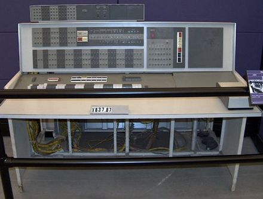

Sitio informativo sobre temas informáticos
Generaciones de Computadoras: Segunda Generación
Volver a Inicio
Generaciones de computadoras
Características
Tecnología:
Utilizaban transistores en lugar de válvulas de vacío, lo que permitía dispositivos más pequeños y eficientes.
Programación:
Se introdujeron lenguajes de programación más avanzados, como COBOL y FORTRAN.
Almacenamiento:
Se utilizaban cintas magnéticas y discos duros, mejorando la capacidad de almacenamiento y velocidad.

Ejemplos de Computadoras
IBM 7094
(1962): Utilizada en aplicaciones científicas y comerciales, con capacidades de procesamiento avanzadas.
UNIVAC 1108
(1964): Destacada en el procesamiento de datos y sistemas de tiempo compartido.
DEC PDP-8
(1965): Considerada la primera computadora mini, popular en el ámbito académico y empresarial.